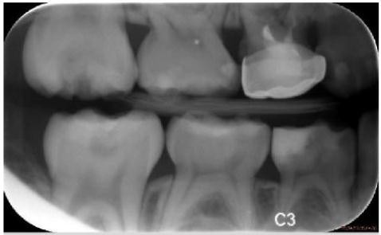
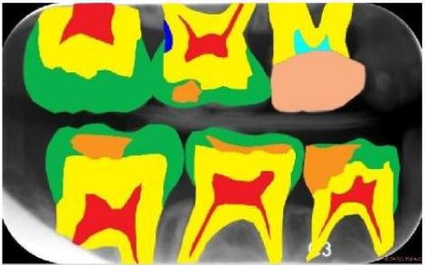

语义分割
什么是语义分割？¶
目标¶
将图像中的每个像素分配到对应的类别标签中，实现类别级别的理解。例如，将一张道路图片中的像素分为“汽车”、“行人”、“道路”、“天空”等类别。
与实例分割的区别：¶
- 语义分割不区分同一类别的不同实例（如“所有汽车视为同一类”）。
- 实例分割需区分同一类别的不同对象（如“两辆不同的汽车”）。
应用场景¶
自动驾驶（道路/障碍物识别），医疗影像（器官/组织定位），城市规划（土地分类），工业质检（产品缺陷检测）等。
示例¶
输入：图片

输出：同尺寸的分割标记（像素水平），每个像素会被识别为一个类别（category）
方法¶
1. 传统方法¶
阈值法与区域生长
阈值法：基于像素 intensity 的阈值划分（如 Otsu 算法）。
区域生长：从种子点出发，根据相似性（如灰度、纹理）扩展区域。
局限性：依赖光照均匀性，无法处理复杂场景。
编码器-解码器结构
FCN（Fully Convolutional Network）：将传统 CNN 的全连接层替换为卷积层，输出与输入分辨率相同的分割图。
跳跃连接（Skip Connection）：融合多尺度特征（如 ResNet + FCN）。
问题：分辨率下降导致细节丢失。
U-Net
结构：编码器（下采样）→ 池化 → 解码器（上采样）+ 跳跃连接。
优势：保留医学影像中的精细细节，如肿瘤边缘。
应用：医学图像分割（如 MITOS 数据集上的细胞分割）。
2. 深度学习方法¶
两阶段模型
Mask R-CNN（语义分割变体）： 在 Faster R-CNN 检测框基础上，增加一个分支预测类别掩码。
改进：Mask R-CNN++ 通过特征金字塔网络（FPN）增强小物体分割。
单阶段模型
RetinaNet： 使用 FPN 多尺度预测，平衡速度与精度（FPS=140）。
损失函数：Focal Loss 解决类别不平衡问题。
DeepLab 系列： DeepLabv1：AttnModule 注意力机制聚焦关键区域。
DeepLabv3：结合空洞卷积（Dilated Conv）扩大感受野，提升小物体性能。
Transformer-based 方法
ViT-Seg（Vision Transformer for Semantic Segmentation）： 直接将图像划分为 patches，通过自注意力建模全局依赖。
挑战：需大规模数据（如 JFT-300M）预训练。
DETR（Detection Transformer）： 同时处理检测和分割，用 Query 机制关联文本描述与图像区域。
3.关键技术¶
特征金字塔网络（FPN）
作用：融合多尺度特征（如 P3/P4/P5），捕捉小物体和高分辨率细节。
改进：PANet（Path Aggregation Network）通过横向连接增强特征传递。
注意力机制
Cross-Attention：在 Transformer 模型中，动态匹配查询（Query）与键值（Key/Value）。
Self-Attention：建模图像内像素间关系（如 Swin Transformer）。
数据增强
几何增强：随机旋转（±30°）、缩放（0.5~1.5倍）、水平翻转。
色彩增强：调整亮度、对比度、饱和度（CLAHE）。
Mixup：混合两张图像的像素和标签，提升模型鲁棒性。
4.评估指标¶
mIoU（Mean Intersection over Union，平均交并比）： $$ mIoU=\frac{1}{类别数}\sum_c \frac{预测掩码∩真实掩码}{预测掩码∪真实掩码} $$ 目标：mIoU > 70% 表示优秀性能（如 Cityscapes 数据集达到 85%）
Pixel Accuracy（像素准确率）： $$ Pixel Acc=\frac{正确预测像素数}{总像素数} $$
5.代表模型与工具¶
| 模型 | 框架 | 特点 | mIoU（Cityscapes） |
|---|---|---|---|
| FCN | PyTorch/TensorFlow | 首个端到端语义分割模型 | ~50% (原始版本) |
| U-Net | PyTorch | 医学影像分割标杆 | ~90% (医学数据) |
| DeepLabv3+ | PyTorch | 空洞卷积 + Xception 主干 | 89.2% |
| ViT-Hybrid | PyTorch | Vision Transformer + CNN 融合 | 87.3% |
| Mask R-CNN (语义模式) | PyTorch | 两阶段实例分割可扩展为语义 | ~85% |
主流数据集¶
COCO：80 类语义分割标注（含 20k 张图片）。 Cityscapes：19 类城市道路场景（5k 张图片，标注精细）。https://blog.csdn.net/qq_41185868/article/details/82939959
Ade20k：20 类语义分割（20k 张图片，适合训练）。 https://ade20k.csail.mit.edu/
Mapillary Vistas：60 类街景语义分割（百万级标注）。https://blog.csdn.net/qq_41185868/article/details/100147245
总结¶
语义分割技术已从 FCN 的初步探索发展为结合 Transformer 的全局建模，未来将更注重效率与精度的平衡，并通过自监督学习和多模态融合进一步降低对标注数据的依赖。在自动驾驶、智慧城市等场景中，高实时性的语义分割模型（如 NanoDet）将持续推动落地应用。